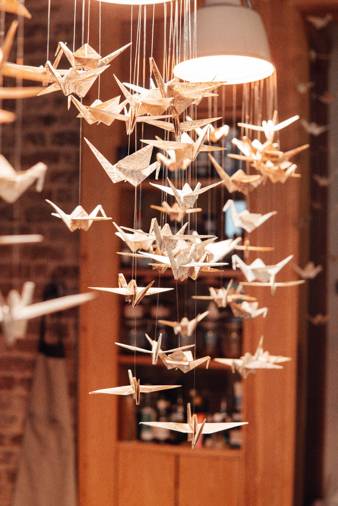

The Pattern Room as installed: cranes folded from printed and plain paper, hanging on threads around the pendant lamps. Photograph: furkanfdemir, via Pexels.
Case 01 — Installation
The Pattern Room
The brief
The Reading Room, a restaurant in a former bookbindery in Bath, wanted a ceiling piece for its dining room — something that belonged to the building's history with paper, that could hang above diners safely, and that would survive a working restaurant: steam, heat and the occasional champagne cork.
Decisions
Cranes, because they read at distance and move gently in warm air. The paper is washi printed with pages from damaged, unsellable books from the bindery's own archive, used with the owner's permission — the text on the wings is the building's. 214 cranes hang on monofilament at varied heights, rigged from a discreet ceiling grid so individual birds can be lowered and replaced. Every strand was kept a measured distance from the pendant lamps, and a sample crane was tested with the fire officer's guidance before the paper was treated and passed.
Outcome
Installed over two nights so the restaurant never closed. Two winters on, the piece is intact: six cranes that softened in the steam above the pass were replaced on a maintenance visit, which is now booked every spring as part of the commission. The owner reports guests photograph the ceiling more than the food — his words are on the home page.